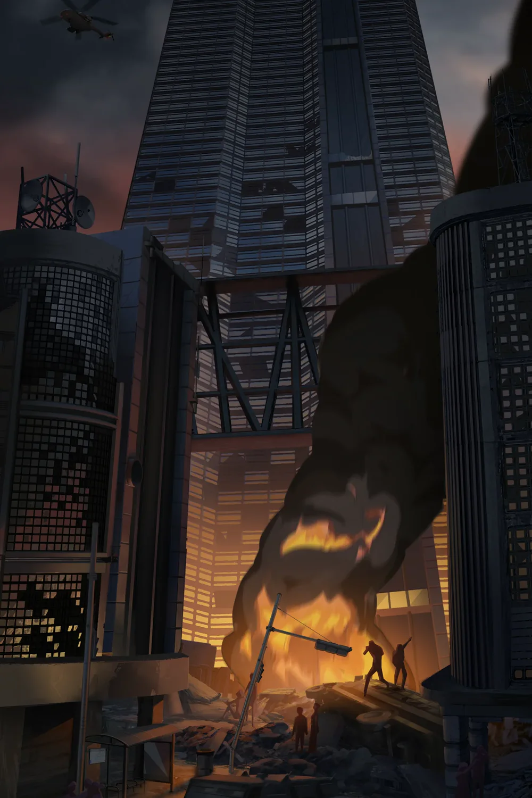
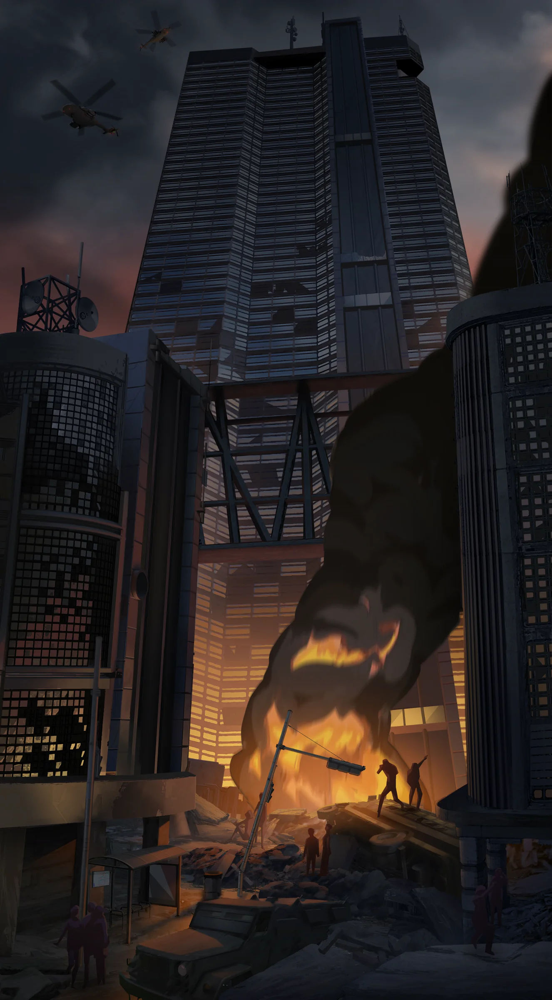
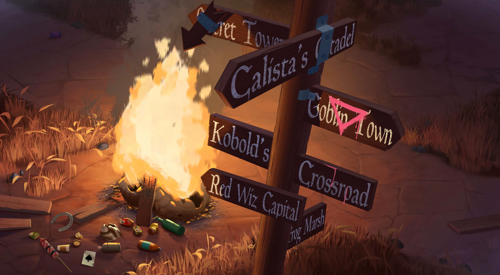
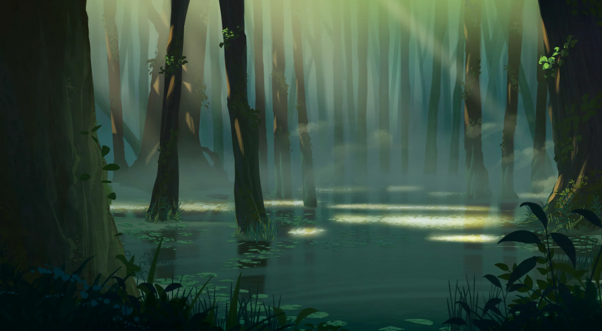
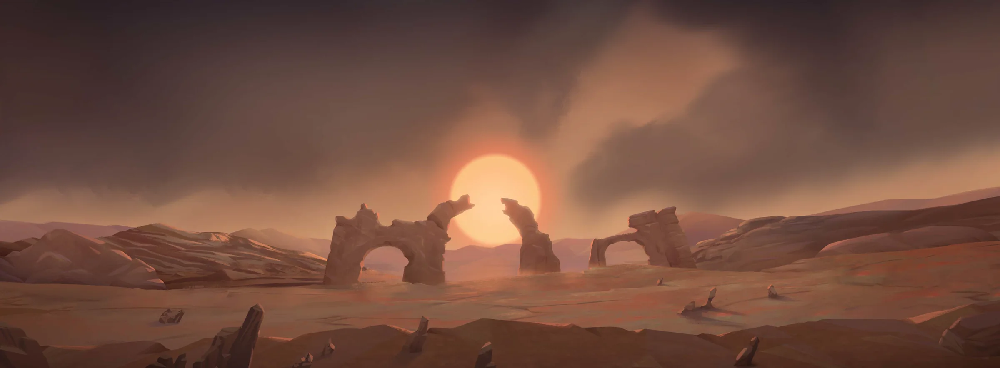

An animated trailer for a planned fantasy series set in the Forgotten Runes wizard universe — burning cities, haunted swamps and a world of strange wizards, narrated by Kristian Nairn.
- My role
- Background Artist
- Animation
- Titmouse
- Produced for
- Magic Machine
 Watch the trailer
Official trailer · Forgotten Runes · opens YouTube
Watch the trailer
Official trailer · Forgotten Runes · opens YouTube
Backgrounds



